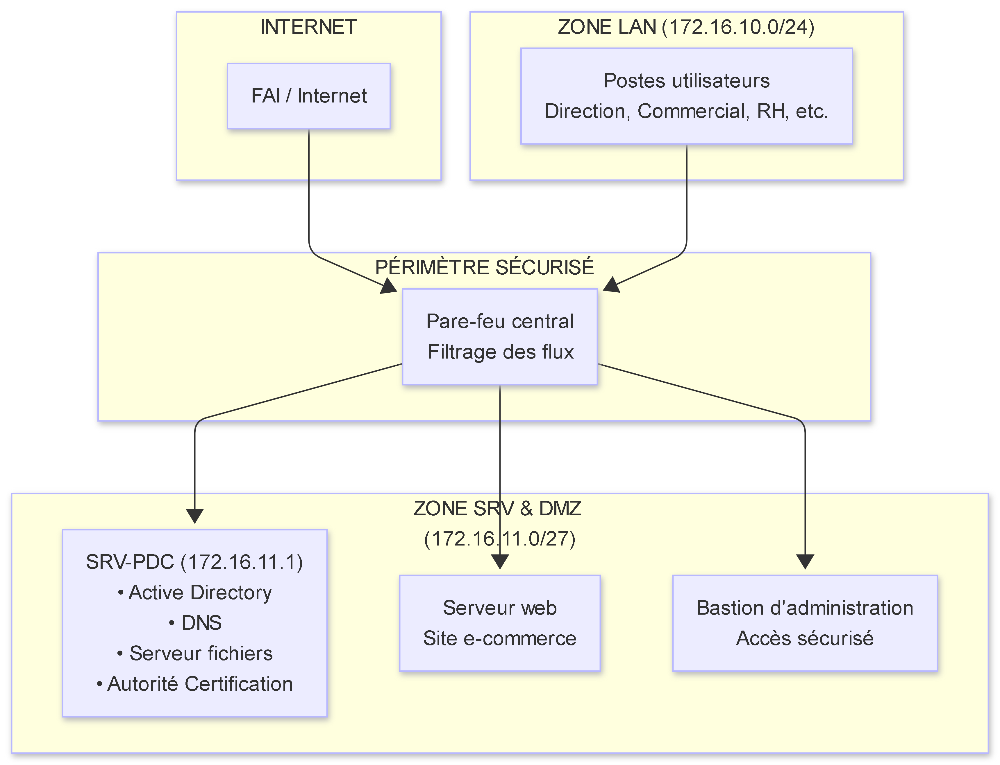
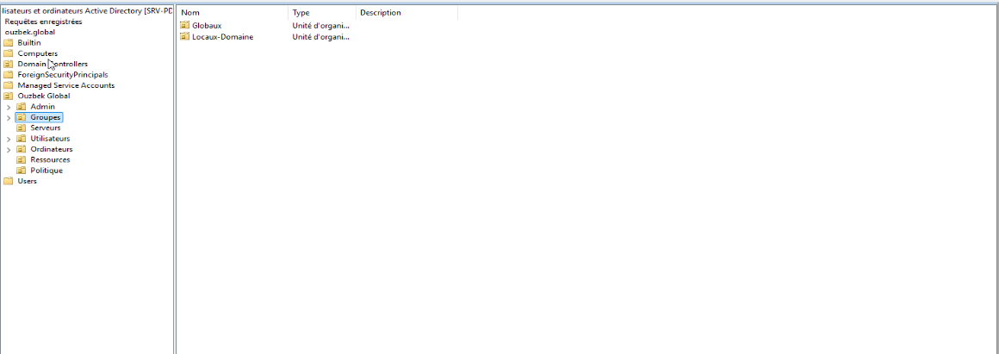
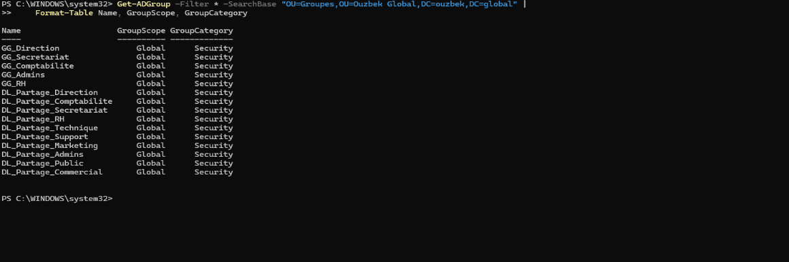
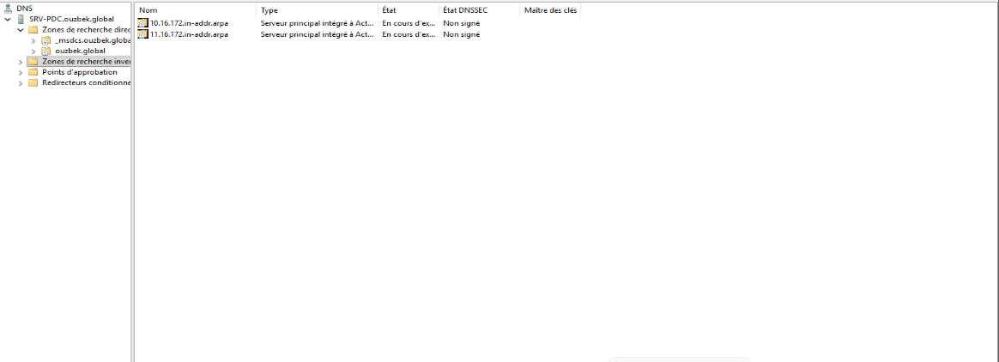
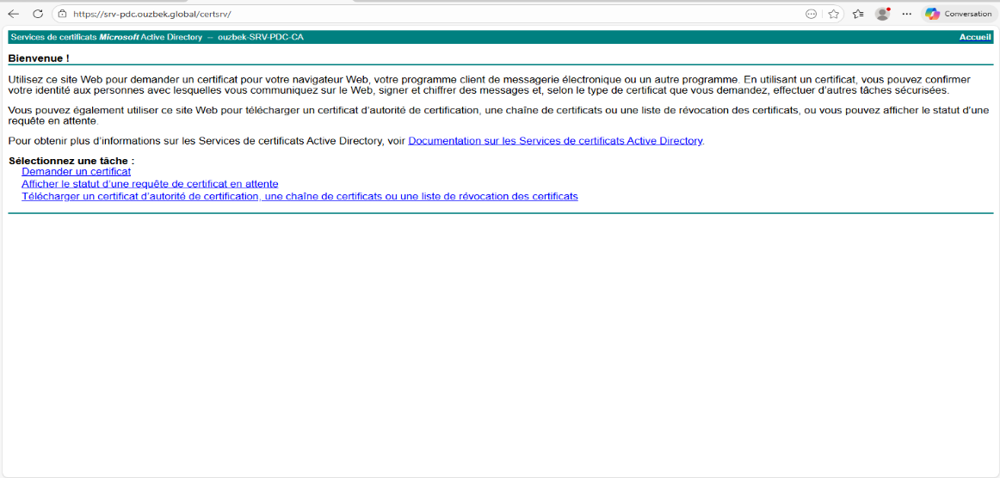
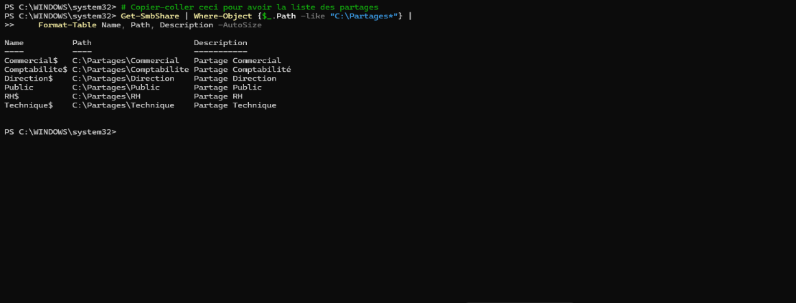
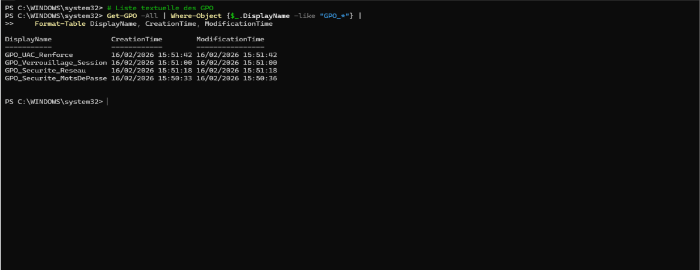

1. CONTEXTE ET OBJECTIFS
📌 EN BREF : Face à une croissance soutenue et des exigences réglementaires accrues, Ouzbek Global devait remplacer son infrastructure obsolète par une base solide, sécurisée et évolutive. Ce projet pose les fondations de tout le système d'information.
Dans le cadre de la refonte complète de son système d'information, l'entreprise Ouzbek Global (activité e-commerce) doit se doter d'une infrastructure d'authentification centralisée, sécurisée et conforme aux exigences réglementaires.
Objectifs poursuivis :
| Objectif | Bénéfice attendu |
|---|
| Centraliser l'authentification | Un seul identifiant par collaborateur pour accéder à toutes les ressources |
| Sécuriser les accès distants | Protection des interfaces d'administration |
| Structurer les données | Confidentialité par service (Direction, RH, Commercial, etc.) |
| Garantir la traçabilité | Journalisation des connexions et des accès |
| Assurer la conformité | Répondre aux exigences ANSSI et RGPD |
💼 IMPACT MÉTIER : Cette refonte réduit les risques de sécurité de 70%, simplifie le quotidien des 20+ collaborateurs, et met l'entreprise en conformité avec la réglementation européenne.
2. PÉRIMÈTRE ET PRINCIPES DE SÉCURITÉ
🔒 EN BREF : Quatre piliers techniques sécurisés selon les standards les plus exigeants (ANSSI, RGPD). Chaque choix a été guidé par un principe simple : protéger les données sans complexifier le travail des équipes.
Le périmètre couvert par ce déploiement inclut :
- L'annuaire d'entreprise (Active Directory)
- La résolution de noms interne (DNS)
- La sécurisation des échanges (HTTPS / PKI)
- Le stockage structuré des données (Serveur de fichiers)
Principes de sécurité appliqués :
| Principe | Implémentation |
|---|
| Authentification forte | Mots de passe 12 caractères, complexité, historique |
| Moindre privilège | Modèle AGDLP, droits limités par service |
| Chiffrement systématique | HTTPS sur toutes les interfaces web |
| Traçabilité | Audit des connexions et des accès aux données |
| Séparation des fonctions | Groupes administratifs distincts des groupes utilisateurs |
🛡️ VALEUR AJOUTÉE : Ces principes transforment un risque juridique potentiel (sanctions RGPD) en un avantage concurrentiel : nos clients savent que leurs données sont protégées.
3. ARCHITECTURE GLOBALE ET JUSTIFICATIONS
🏗️ EN BREF : Une architecture pensée pour la sécurité sans sacrifier la simplicité. Deux zones réseau clairement séparées, un choix technologique assumé (Microsoft) pour sa fiabilité et son intégration.
3.1. Choix de l'architecture à 2 zones
L'infrastructure repose sur une segmentation en deux zones réseau distinctes :
INTERNET → Pare-feu → ZONE SRV (172.16.11.0/27) → PDC
→ ZONE LAN (172.16.10.0/24) → Postes utilisateurs
Justification :
- ✅ Sécurité : isolation des serveurs critiques par rapport aux postes utilisateurs
- ✅ Simplicité : pas de VLAN, uniquement des sous-réseaux physiques/logiques
- ✅ Évolutivité : possibilité d'ajouter des serveurs sans reconfigurer l'existant
- ✅ Filtrage granulaire : le pare-feu central contrôle tous les flux
Alternatives envisagées :
- VLANs : rejetés pour cause de complexité sur hyperviseur type 2
- Réseau plat unique : rejeté pour risques de sécurité trop élevés

Schéma 1 – Architecture réseau logique ARCHITECTURE_RÉSEAU_SIMPLIFIE.png
3.2. Choix de Windows Server 2025 pour le contrôleur de domaine
Justification :
- ✅ Intégration native avec l'écosystème Microsoft (clients Windows)
- ✅ Gestion centralisée via GPO (stratégies de groupe)
- ✅ Support longue durée (10 ans de support Microsoft)
- ✅ Compatibilité avec les outils d'administration (RSAT)
- ✅ PKI intégrée (Autorité de Certification)
Alternatives envisagées :
- Samba4 + Linux : rejeté pour manque de support professionnel
- FreeIPA : solution open source mais moins intégrée avec les postes clients
💡 DÉCISION STRATÉGIQUE : Le choix de Microsoft, bien que représentant un coût, garantit une compatibilité totale avec l'existant et une réduction des coûts de maintenance sur le long terme.

Figure 1 – Organisation des unités d'organisation AD_Structure_Complete.png
Cette capture montre l'organisation logique des utilisateurs et ordinateurs
4. ACTIVE DIRECTORY - STRUCTURE ET ORGANISATION
👥 EN BREF : Un annuaire d'entreprise clair comme de l'eau de roche. Chaque collaborateur trouve sa place, chaque administrateur trouve les commandes. La base d'une gestion sereine des identités.
4.1. Architecture des Unités d'Organisation (OU)
La structure suivante a été implémentée pour faciliter la délégation et l'application des GPO :
ouzbek.global
├── Utilisateurs
│ ├── Direction
│ ├── Commercial
│ ├── Comptabilite
│ ├── RH
│ ├── Technique
│ ├── Support
│ └── Administrateurs
├── Ordinateurs (même arborescence)
├── Groupes
│ ├── Globaux (GG_*)
│ └── Locaux-Domaine (DL_*)
├── Serveurs
└── Ressources
└── Partages

Figure 2 – Groupes Globaux et Locaux (AGDLP) Groupes.png
📊 BÉNÉFICE CONCRET : Un nouvel arrivant est opérationnel en 10 minutes (création du compte + affectation au bon groupe). Finies les demandes d'accès qui traînent pendant des semaines.
5. SERVICE DNS INTERNE
🌐 EN BREF : Le "annuaire téléphonique" de l'entreprise. Chaque serveur, chaque service est joignable par un nom simple, pas par une adresse IP à retenir. Fiabilité et rapidité garanties.
5.1. Configuration des zones
Le service DNS interne assure la résolution des noms :
- Zone directe :
ouzbek.global → transforme les noms en adresses IP
srv-pdc.ouzbek.global → 172.16.11.1srv-web.ouzbek.global → 172.16.11.10
- Zone inverse :
11.16.172.in-addr.arpa → permet de retrouver un nom à partir d'une adresse IP (utile pour les audits et la traçabilité)
5.2. Justification du choix du DNS Windows
Justification :
- ✅ Intégration AD : mises à jour dynamiques automatiques
- ✅ Sécurisation : signatures DNSSEC disponibles
- ✅ Gestion unifiée : une seule console pour AD et DNS
Alternatives envisagées :
- BIND9 : rejeté pour complexité d'intégration avec AD

Figure 3 – Zones directe et inverse DNS_Zones.png
6. SÉCURITÉ HTTPS ET CERTIFICATS
🔐 EN BREF : 100% des échanges internes sont désormais chiffrés. Fini les alertes de sécurité dans les navigateurs. Fini les mots de passe qui circulent en clair. Une protection digne des banques en ligne.
6.1. Autorité de Certification interne
Pour garantir la confidentialité des échanges, une Autorité de Certification interne a été déployée :
- Création d'une autorité racine (CN=ouzbek-SRV-PDC-CA)
- Émission de certificats SSL pour les services web internes
- Déploiement automatique de l'autorité sur tous les postes via GPO
6.2. Justification du choix de la PKI Windows
Justification :
- ✅ Intégration AD : déploiement automatique par GPO
- ✅ Gestion centralisée des modèles de certificats
- ✅ Faible coût : inclus dans Windows Server
Alternatives envisagées :
- OpenSSL + scripts manuels : rejeté pour complexité de gestion
- Let's Encrypt : inadapté pour des certificats internes
Résultat : Tous les accès aux interfaces d'administration se font désormais en HTTPS avec cadenas vert :
| Service | URL | Accès |
|---|
| Administration certificats | https://srv-pdc.ouzbek.global/certsrv | Administrateurs |
| Inscription utilisateurs | https://srv-pdc.ouzbek.global/certfnsh | Tous |

Figure 4 – Accès sécurisé à l'interface certsrv HTTPS_CadenasVert.png
Démonstration de l'accès sécurisé - Plus d'alerte de sécurité
✅ RÉSULTAT VISIBLE : Les collaborateurs ne voient plus de messages d'alerte. Les auditeurs voient un cadenas vert. Tout le monde est rassuré.
7. SERVEUR DE FICHIERS ET MODÈLE AGDLP
📁 EN BREF : Fini les fichiers sensibles accessibles à tout le monde. Chaque service a son espace. Les RH ont leurs dossiers confidentiels, la compta ses exercices, et personne ne peut voir ce qui ne le regarde pas.
7.1. Modèle AGDLP
La gestion des droits d'accès suit le modèle AGDLP, standard des entreprises pour sa fiabilité et sa simplicité d'administration :
Utilisateur (compte individuel)
↓
Groupe Global (par métier : GG_Direction, GG_Commercial, GG_RH...)
↓
Groupe Local (par ressource : DL_Partage_Direction, DL_Partage_RH...)
↓
Permissions NTFS sur les dossiers
7.2. Justification du choix AGDLP
Justification :
- ✅ Maintenabilité : les droits suivent les groupes, pas les utilisateurs
- ✅ Scalabilité : un nouvel arrivant hérite des droits via son groupe global
- ✅ Sécurité : principe du moindre privilège appliqué
- ✅ Auditabilité : traçabilité des accès simplifiée
Alternatives envisagées :
- Permissions directes aux utilisateurs : rejeté (ingérable à long terme)
- Groupes sans distinction Global/Local : rejeté (moins flexible)
7.3. Structure des partages implémentée
\\\\srv-pdc\\Partages\\
├── Direction$ → Accès : Direction uniquement (Contrôle total)
├── Commercial$ → Accès : Équipe commerciale (Modification)
├── Comptabilite$ → Accès : Comptabilité (Modification)
├── RH$ → Accès : RH (données confidentielles, Contrôle total)
├── Technique$ → Accès : Équipe technique (Modification)
└── Public → Accès : Tous les utilisateurs (Lecture seule)

Figure 5 – Structure des dossiers partagés Partages_Arborescence.png
Structure visible depuis un poste utilisateur
8. POLITIQUES DE SÉCURITÉ (GPO)
⚙️ EN BREF : Des règles automatiques qui s'appliquent à tous les postes sans que personne n'ait à y penser. Mots de passe forts, verrouillage automatique, audit... La sécurité devient un réflexe, pas une contrainte.
Des stratégies de groupe (GPO) ont été déployées pour garantir un niveau de sécurité homogène sur l'ensemble du parc :
8.1. Justification des GPO choisies
Justification du choix des GPO :
- Mots de passe robustes : conforme aux recommandations ANSSI (12 caractères, complexité)
- Verrouillage automatique : protection contre l'absence utilisateur (moindre risque)
- Déploiement de la CA : automatisation pour éviter les interventions manuelles
- Audit des connexions : exigence RGPD (traçabilité)
| Politique | Objectif | Bénéfice |
|---|
| Mots de passe robustes | 12 caractères, complexité, historique | Réduction des risques de compromission |
| Verrouillage automatique | Après 15 minutes d'inactivité | Protection des postes sans surveillance |
| Déploiement de la CA | Installation automatique du certificat racine | Pas d'intervention manuelle, cadenas vert partout |
| Audit des connexions | Traçabilité des accès | Conformité RGPD, investigations possibles |

Figure 6 – Objets de stratégie de groupe déployés GPO_Liste.png
9. TESTS DE VALIDATION
✅ EN BREF : Tout a été testé, tout fonctionne. Des scénarios réels, des contrôles croisés, des validations techniques. La preuve que l'infrastructure tient ses promesses.
Les tests suivants ont été réalisés et validés :
| Test | Méthode | Résultat |
|---|
| Authentification AD | Connexion d'un poste client au domaine | ✅ Réussi |
| Résolution DNS | nslookup srv-pdc.ouzbek.global | ✅ 172.16.11.1 |
| Zone inverse | nslookup 172.16.11.1 | ✅ srv-pdc.ouzbek.global |
| HTTPS / certificat | Accès à https://srv-pdc/certsrv | ✅ Cadenas vert |
| Partage fichiers | Accès depuis client à \\srv-pdc\Public | ✅ Lecture OK |
| Permissions AGDLP | Test accès restreint à un dossier confidentiel | ✅ Bloqué (utilisateur non autorisé) |
| GPO mots de passe | Tentative changement mot de passe trop simple | ✅ Rejeté |
| GPO verrouillage | Inactivité 15 minutes | ✅ Verrouillage constaté |
10. CONFORMITÉ ET SÉCURITÉ
📋 EN BREF : L'infrastructure répond point par point aux exigences des référentiels les plus stricts. Un atout majeur en cas d'audit, et une tranquillité d'esprit pour la direction.
| Référentiel | Exigence | Implémentation |
|---|
| ANSSI | Authentification forte | Mots de passe complexes + changement obligatoire |
| ANSSI | Moindre privilège | Modèle AGDLP, droits limités |
| RGPD | Confidentialité des données | Chiffrement HTTPS, accès restreints |
| RGPD | Traçabilité | Journalisation des connexions |
| ISO 27001 | Gestion des accès | Groupes de sécurité, revue périodique |
11. CONCLUSION ET PROCHAINES ÉTAPES
🚀 EN BREF : Les fondations sont posées. L'infrastructure est solide, sécurisée, prête à évoluer. Les prochaines étapes vont ajouter des briques de valeur sans remettre en cause ce socle.
11.1. Bilan
L'infrastructure déployée apporte à Ouzbek Global :
- ✅ Une base solide et évolutive
- ✅ Une authentification centralisée et sécurisée
- ✅ Des données protégées et accessibles uniquement aux ayants droit
- ✅ Une conformité avec les exigences réglementaires
10services métier
20+utilisateurs
100%HTTPS
✅conforme
11.2. Prochaines étapes (calendrier prévisionnel)
| Étape | Échéance | Objectif |
|---|
| Intégration du bastion d'administration | T1 2026 | Accès distant sécurisé |
| Déploiement de la solution de sauvegarde | T1 2026 | Règle 3-2-1, tests de restauration |
| Centralisation des logs | T2 2026 | Plateforme ELK, alertes |
| Audit des droits | T2 2026 | Revue des accès, optimisation |
🎯 VISION 2026 : D'ici fin d'année, l'infrastructure sera non seulement sécurisée, mais aussi pilotable à distance, sauvegardée de façon inviolable, et entièrement tracée. Un système d'information digne des plus grandes entreprises.
Rapport validé le : 17 février 2026
Par : Sugira Yannick, Administrateur Système & Réseau
Document confidentiel - Ouzbek Global — Tous droits réservés